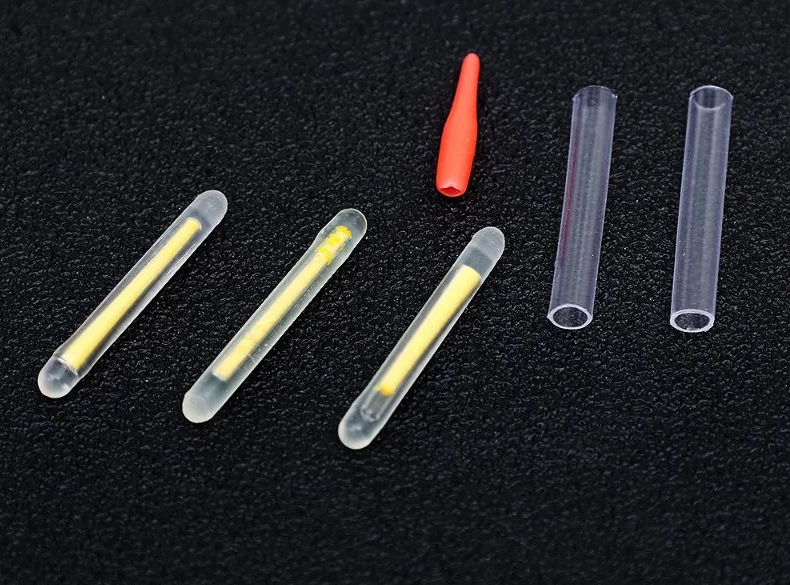

Las barras fluorescentes para pesca nocturna, también conocidas como glow sticks, son un accesorio sencillo pero muy efectivo para mejorar la visibilidad durante sesiones de pesca con poca luz.
Están pensadas para colocarse en flotadores, punteras de caña o bajos, permitiendo identificar picadas y movimientos incluso en completa oscuridad.
Para activar la barra fluorescente basta con doblarla ligeramente, lo que inicia la reacción luminosa. Una vez activada, proporciona iluminación constante durante varias horas.
El set incluye tubos transparentes que permiten unir la barra al flotador o a la puntera de la caña. Dependiendo del grosor del flotador, se recomienda:
El flotador con cabeza naranja facilita aún más la visibilidad y orientación nocturna.
Las barras fluorescentes son un accesorio simple pero muy útil para pesca nocturna, especialmente en pesca a flotador o cuando se necesita controlar la posición de la línea y las picadas.
No están pensadas para eging técnico, pero sí como complemento económico para sesiones nocturnas ocasionales o pesca recreativa.
Valoración Egis Low Cost: ★★★★☆ (4,2/5)
Las barras fluorescentes para pesca nocturna permiten mejorar la visibilidad del equipo sin necesidad de electrónica. Son ideales para pescadores que buscan soluciones simples, económicas y efectivas en condiciones de poca luz.